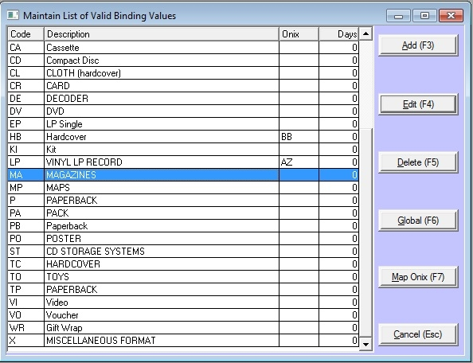

The ONIX XML format not only defines what title information is imported but it also defines unique codes for this information to maintain consistency between any databases that import and export these titles. In Bookscan you will need to modify the Subject, Binding and Status authority tables to use these unique ONIX codes.
If you are just setting up your database then you should load these codes as your default ones. This is easily done by pressing <F12> from these any of these authority tables and the ONIX codes will be automatically loaded.
If you have already setup your database and are using your own codes for subject, status and binding you can edit these codes and enter into the ONIX field the corresponding ONIX code that matches your internal code. Then the importing window will use these ONIX codes to map to your internal codes, which ensures you will be getting the correct information into your database.

There is also an Extra Fields tab page on the Bookscan master title window, and has all the publisher information, which is imported from the ONIX XML files.